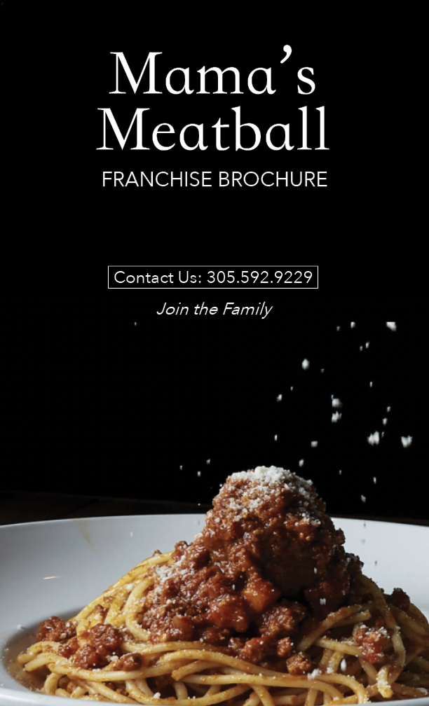
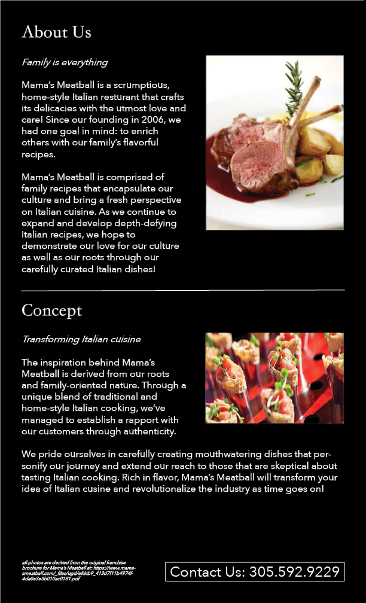
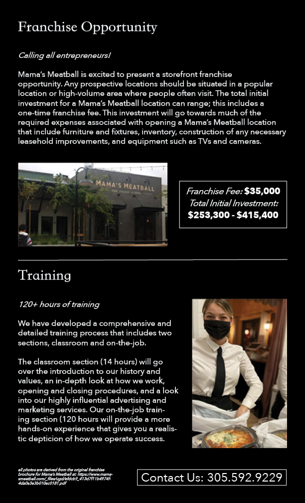
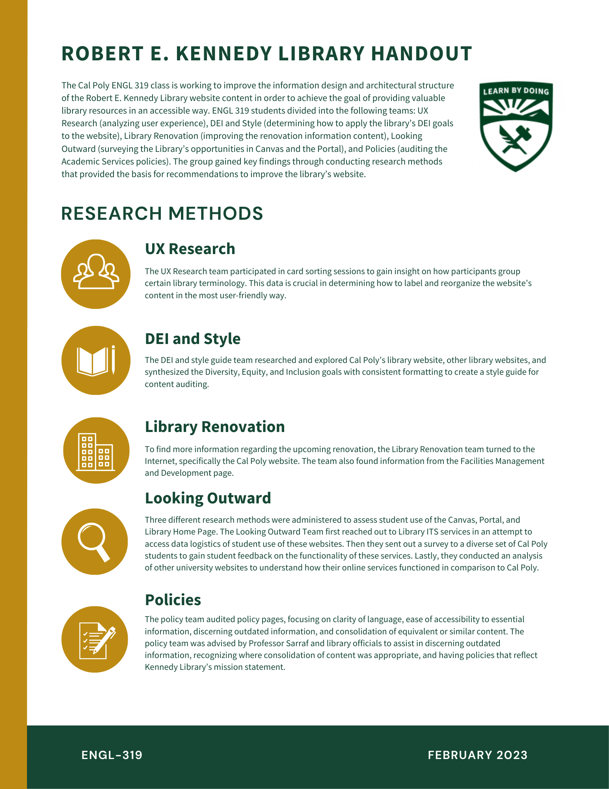

ENGL 319 (Information Design and Production) is a core course for the Technical and Professional Communication (TPC) Program, which I am enrolled in.
Scroll through this page to view my work for ENGL 319 or use the table of contents below to navigate to a specific project. Each project is followed by a reflective letter to my course instructor, Dr. Sarraf, demonstrating how I have met assignment expectations.
As a fourth-year Liberal Arts & Engineering Studies major, I have spent my college career learning about the blend between technology and humanistic disciplines. I discovered my interest in technical writing during my second year at Cal Poly, and I have been developing my writing and design skills ever since.
I used to think that technical writing was an objective specialty; I liked learning about things that were straight-forward and only had one right answer. During my past summer internship with Tableau, however, I was quick to learn that design and writing involve a lot of advocacy: you have to stick up for the changes you make and why you think they are correct.
I believe that everyone has a purpose, and my purpose is to create. I am so fortunate to be able to study both Computer Science and English in my major, which are two of the most design-oriented fields that focus on the curation of content. In the TPC Certificate Program, I am always learning new things about the technical writing industry: project management, editing techniques, document layout and design, and working with real clients. I am excited to continue my career as a technical writer and develop even more skills that I never anticipated.
View my other projects and professional work by switiching to a different tab in the navigation bar at the top of this page. This entire site was built from scratch in HTML and CSS.
Franchise brochure redesign for Mama's Meatball restaurant in San Luis Obispo.



Assignment 1 Reflection
Dear Dr. Sarraf,
I am very excited to continue my journey through the Technical Communications program in your Information Design and Production class. To begin looking for an artifact that could use some redesigning, I started searching up websites of restaurants and businesses in San Luis Obispo that I personally enjoy. I stumbled across a brochure PDF on the website for Mama’s Meatball restaurant. After analyzing the content on the Original Mama’s Meatball Franchise Brochure, I immediately knew that I could create a much more engaging and concise brochure for the restaurant franchise. The original brochure is wordy; the text is vast and inconsistent in font styles. The images displayed are enormous, taking up almost half of each page. I realized this assignment would require a lot of document layout design, so I selected Adobe InDesign as my application of choice.
The last time I used Adobe InDesign was over a year ago. I am much more proficient in Adobe Illustrator, as I am constantly creating graphics or designs on that application. Adobe InDesign, however, is very similar to Illustrator; it has some of the same tools and I am familiar with the basic nuances. Certain elements were tricky, especially deciding on a style guide for my fonts. The two fonts I wanted to use were not the same scale when I set them at a particular text size, so I had to readjust the text box sizes multiple times to get the correct sizing I wanted. The majority of my experience using the software was enjoyable. I really like working on document design and layout, and playing around with the format of different elements.
While creating my artifact, I tried to keep our readings from this class so far in the back of my mind. I agree with Robin Williams’ emphasis in “The Non-Designer’s Design Book” on the four main principles of design. If there was one thing on the original Mama’s Meatball brochure that I enjoyed, it was the contrasting colors. Something about the dark background and light text gave a sophisticated feel, reminding me of the atmosphere when I eat dinner at Mama’s Meatball. I incorporated a plain black background and a straightforward text style in my redesign, with the purpose of trying to not distract from the delicious images of food. The main role of these images is to draw the reader in, so I wanted to make the content as simplistic as possible. I practiced using repetition throughout both pages, with an italicized statement below each subheading. I enjoyed repeating this element, as it would make reading the brochure easier for readers. I also made sure to repeat their phone number on each page so it could be accessible for users to contact Mama’s Meatball.
A great part about using Adobe InDesign for producing documents is the ability to create alignment with ease. There are built in margin boundaries so you can stay consistent with the accuracy in your formatting. When you move an element on the page, the application helps guide you to a spot that mirrors the existing spacing. In addition, I wanted to keep the separation of content on the original Mama’s Meatball brochure: About Us, Concept, Franchise Opportunity, and Training. I ensured that the pages were divided in even halves, and separated the content accordingly. The corresponding images to each section are kept in close proximity to the words, so the reader can tell what the paragraph will be about just by looking at the picture. After discussing copyright issues and gaining advice from you about this topic in class, I created a small italicized text box at the bottom of the second page that describes where the images are derived from. I didn’t want to distract from the brochure, so I kept this text extremely fine print.
As someone who has dined at Mama’s Meatball multiple times, I know this restaurant’s audience and values. For the new franchise brochure, however, the audience is catered towards both family-oriented and business-minded people. The professionalism in my redesign accurately captures the hospitality and sophistication that encapsulates Mama’s Meatball as a franchise opportunity. The purpose of the brochure is to encourage entrepreneurs to invest in a franchise. I began the content with a touching page about their backstory, followed by an information page about their franchise opportunity and a call to action to reach out to them if interested. This format is intended to draw in potential investors and increase their desire to pursue opening a Mama’s Meatball restaurant.
I recently made some changes to this redesign, based off the feedback you had provided for me. Changes I made include: adding a cover page, editing images to appear brighter, and working on the consistency in my formatting. The redesign immediately looked more professional and put-together, due to the feedback from a fresh perspective.
Sincerely,
Nicole Arcolino
1-Pager summarizing the findings of the Robert E. Kennedy Library content audit. See the link below to view the collaboratively written content audit report.

Assignment 2 Reflection
Dear Dr. Sarraf,
When we were first starting to brainstorm for Assignment 2 with Heather in class, I was excited about the prospect of working with UX Research data and developing content with the results. Heather supported the idea of creating a UX Research team that would collaborate with the library’s existing interns, but the end result wasn’t something I was necessarily proud of. I think my team did our best with the lack of engagement from the library UX team and the short time period, however I certainly wish that we could have completed a more concrete deliverable.
A meeting that we were supposed to have with the team was postponed by a week and when we were able to attend their Zoom session, everyone seemed really rushed and hectic with the card sorting activity coming up. In the future, I would recommend that any team performing a content strategy audit for the Cal Poly Library communicate a clear list of hopeful deliverables to the client/administrator (Heather) so they are aware of your team’s goals and intentions. Heather did mention an idea for our team to look at past user personas they had researched and come up with a more diverse set of people to research in the future. Unfortunately, this occurred two days before the presentation so it seemed like an unobtainable task.
In this assignment, the biggest challenge came from my ability to use project management techniques within a strict time frame. As I mentioned in the previous paragraph, I wish my team could have contributed more to the overall audit. Looking back at the experience, I could have practiced better project management skills by communicating with the lead UX intern, Justin, and requesting recent data they had collected. We had asked for this information, but I definitely could have pestered the team more to get the information we wanted.
While drafting up the 1-pager, I got the chance to practice my information design skills for a real client. I love these client projects because you get to think about user-centered design techniques for a real, existing client that you are trying to impress. The 1-pager team made sure to stick with a simple layout and basic graphics in order to effectively communicate our class’s findings with the library staff. We collaborated on Canva and immediately found a template we liked. Everyone worked together to input the information we wanted to showcase, and we added some visual elements by implementing the Cal Poly colors and logo. I liked this aspect of practicing my publication skills, as the pressure to impress and accurately inform the Kennedy library staff heightened my motivation.
Each 1-pager team member worked on implementing and revising the content of their own previous team. For example, I took the content that my UX Research team and I drafted on the content strategy report and revised it so the information was concise, yet fully encompassed our recommendations and research methods (card sorting).
Once the official presentation had concluded, I was extremely happy to see the reception from the audience. Every person in attendance was captured by the presentation and had follow up questions that our class answered with ease. It was clear to see that the audience had sincerely taken our recommendations to heart and would use our findings throughout their renovation process. This was the first time I was able to see our impact as a whole and it felt accomplishing to leave the presentation feeling like I had helped them in some way.
In ENGL 317 when I worked on a client project for Little Riders, the process went smoothly since we knew what we were redesigning: the handbook. In this client project, my team experienced difficulties in finding something concrete to work on and feeling the pressure of our lack of contribution. However, I am glad to have experienced these obstacles so I can know how to overcome them in my future professional career.
Sincerely,
Nicole Arcolino
Data visualization displaying the pathway to effective team communication.
Assignment 3 Reflection
Dear Dr. Sarraf,
Going into this assignment, I was extremely excited and eager to begin constructing a thoughtful and comprehensive data visualization. I love creating data visualizations because it involves many aspects that I enjoy: document design, user experience design, and stylistic elements. Once our class was able to determine what we were going to work on, it was easy to come up with an idea with my group.
I was a part of group 2 and we immediately concluded that we all experienced some type of difficulty in overall communication. During the content audit assignment with the Robert E. Kennedy Library, the UX Research group faced obstacles in communicating with the existing research interns about our intent and expectations with the audit. My group during assignment 3 wanted to create a visualization to highlight how important it is to communicate effectively during all stages of a project to ensure deliverables would be completed in a timely manner.
My group decided to use Canva as our platform of choice since it is great for collaboration and it has a lot of readily accessible templates. We drew inspiration from a template we saw with four different circles and a squiggly line that paved through all of them. This design compelled us to come up with four main steps to help future students practice effective communication. The four steps we came up with were concrete pieces of advice that are foolproof in ensuring a strong form of communication within group projects. Steps included were: establishing a mode of communication, assigning team roles, scheduling meetings in advance, and listing deliverables. These four elements were all solutions to problems that people in my group faced during the audit so we knew they would be helpful to the reader.
It was extremely beneficial to perform peer reviews of our data visualization drafts during class. My group made a significant amount of changes so the visualization would be more readable and comprehensible. Most of our changes involved formatting and layout, as we had to ensure that each of the four steps looked uniform and had the same text size. We also added a simple background that was cohesive with our information, but did not take away from the intended message. You helped us come up with a new title and this really transformed our visualization by simplifying it and making it more concise. Overall, I am really proud of what my group created and I love the “path” that we created. Working with a team on a project is never just a straightforward list of steps, but rather a path that you have to navigate through.
Another thing that I wanted to touch on was my desire to create a data visualization on my own. I was in contact with one of my past computer science professors, Dr. Andrew Danowitz. I had read an article in the Mustang News about a study he conducted about mental health in the engineering department. I was really interested in his findings and I reached out to him when the assignment was first introduced. He replied to me and seemed completely on board to have me create a data visualization for his study. However, I reached out to him multiple times afterwards to try and get some anonymous data and he never responded. I am going to try and reach out again to get this data from him, but if not I definitely want to make my own visualization in a different capacity. I would like to demonstrate that I have exceeded contract expectations, so hopefully I can find something to work on and turn it in as a part of my final project.
Sincerely,
Nicole Arcolino
After multiple failed attempts in reaching out to an old professor about collecting anonymous data from a study they conducted, I decided to create a data visualization for something I am familiar with: the Technical & Professional Communication (TPC) Certificate.
I tried to make the infographic consice and simple, while keeping the design fun! The program is such a fun and inviting space and I thought this design could encourage students to join.
Besides creating this visualization, I have exceeded the grading contract by:
✿ Demonstrating my ability to apply feedback (Mama's Meatball brochure)
✿ Regularly communicating with clients to plan and schedule research activities (content audit)
✿ Facilitating discussions and meetings in group projects (content audit and data visualization)
✿ Using user-centered design techniques to structure information effectively (content audit and data visualization)